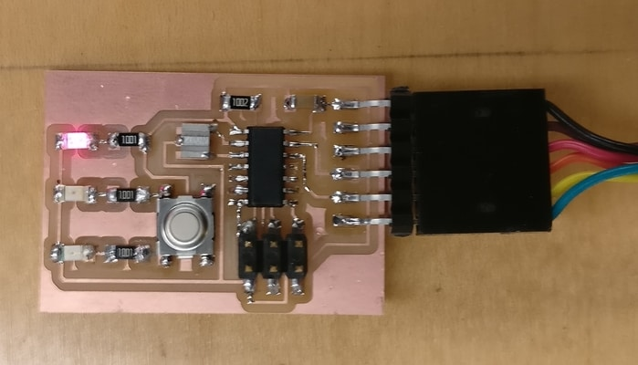

I used Eagle to draw the board. I imported the fab library and began by adding all the base parts. I decided to add 3 LEDs. One LED is always on if there is power. The other two turn on when the button is pressed. There was no particular reason for the lights (no programming intentions in sight), I just wanted get familar with designing in eagle. The schematic part wasn't too difficult. Most of my time went into routing the parts.
Routing is perhaps the fun part. Something I didn't consider early on but would become important was the width of the routes. I initially had them set to 0.0016 in. This would turn out to be a problem when making it because of the 3 routes I squeezed inside the ATTINY44A microcontroller. The vectorization did not have enough space to cut those routes. The middle section just became a large blob with no copper routes. I had tried to design a board that didnt need to go squeeze so much, but I gave up after trying for a long time. I eventually solved this by making those routes smaller.
Here are my files for the milling machine.
traces.png
outline.png
I exported the board into an image. The exact proceure was to set the monochrome flag on and the dpi to 1000. Then I used paint to crop the image, making the trace png and the outline png. Note to self: The copper routes can be very fragile. One issue is that when removing a part after soldering the copper routes would also be removed.
One huge mistake I made was changing the dpi setting. I had changed the dpi from 1000 to 750 and cut the board to completetion only to find out that none of the parts fit. :(
The LEDs work!
So does the button press.
I wasn't able to get the test program to work. :(
{kind=link}
{kind=link}